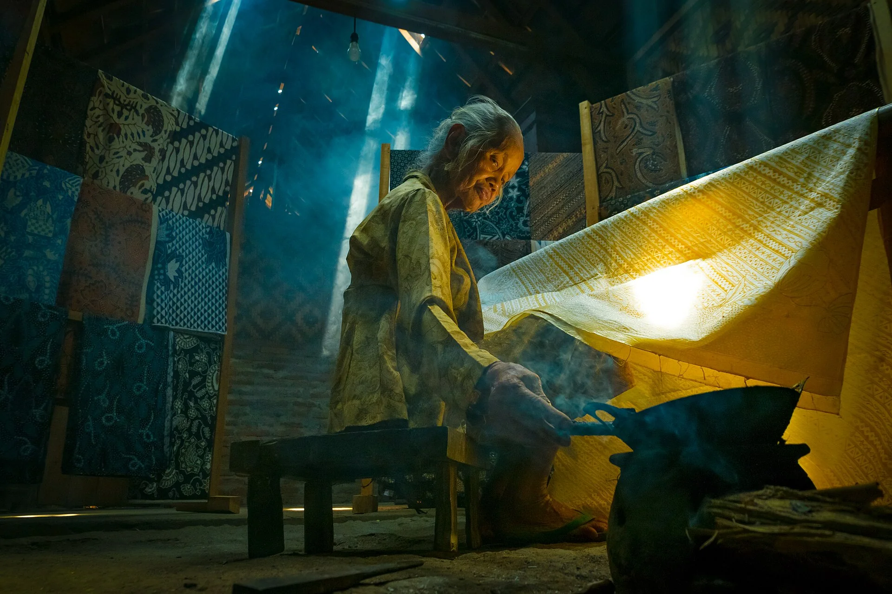

Budaya Yogyakarta
Tradisi yang terus hidup.
Dari batik dan gamelan sampai perayaan kampung. Pilih satu topik untuk mengenal cerita dan tempatnya.

Lihat dan pilih
Cari topik tertentu atau jelajahi semua yang tersedia.
Tidak ditemukan catatan budaya dengan kata kunci tersebut.
Racik pola batik
Pilih motif dan warna untuk membuat pola sederhana, lalu simpan hasilnya sebagai SVG.
Motif klasik
Warna dasar kain
Warna motif
Dengar simulasi nada
Ketuk bilah di layar atau gunakan tombol angka 1 sampai 6.
Bunyi dibuat secara sintetis di peramban, bukan rekaman atau tiruan laras gamelan. Pola otomatis hanya contoh, bukan notasi gending.
Kenalan dengan Punakawan
Ketuk kartu untuk melihat cerita singkat tentang tiap tokoh.
Sumber foto dan lisensi Punakawan
- Semar — Tropenmuseum, sumber foto, CC BY-SA 3.0.
- Nala Gareng — Tropenmuseum, sumber foto, CC BY-SA 3.0.
- Petruk — Hiart, sumber foto, CC0.
- Bagong — Arffzzz, sumber foto, CC BY 4.0.